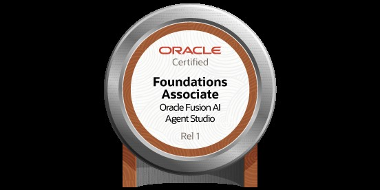
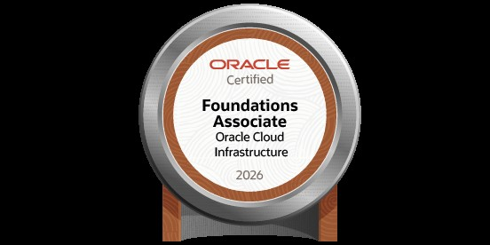
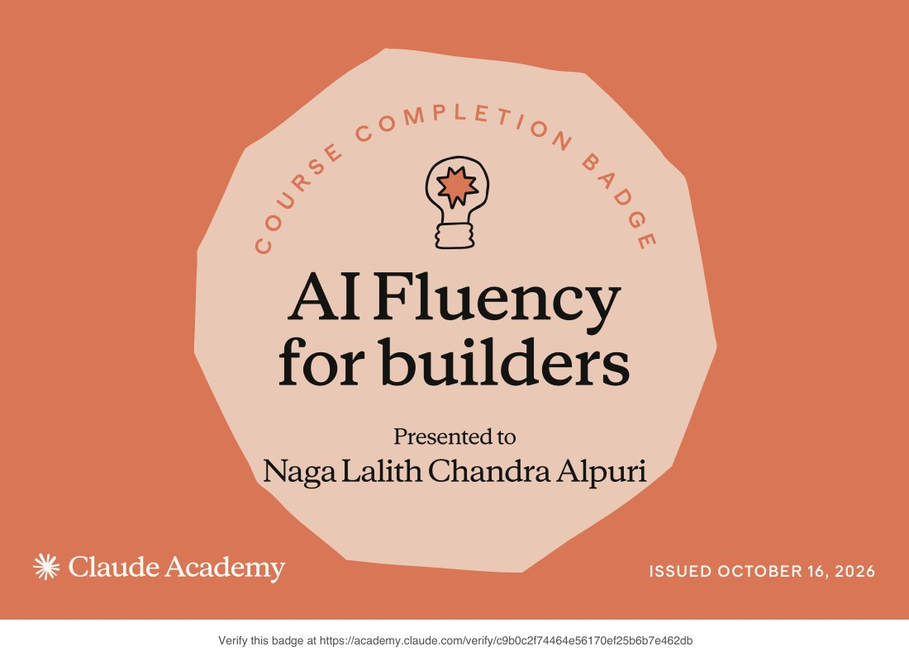
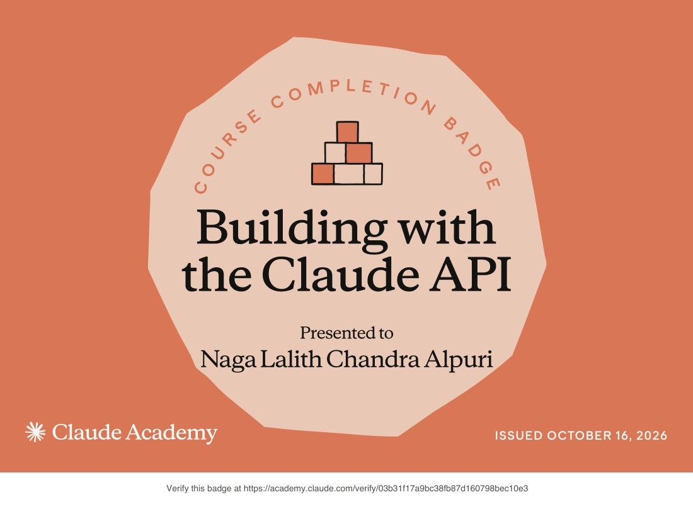
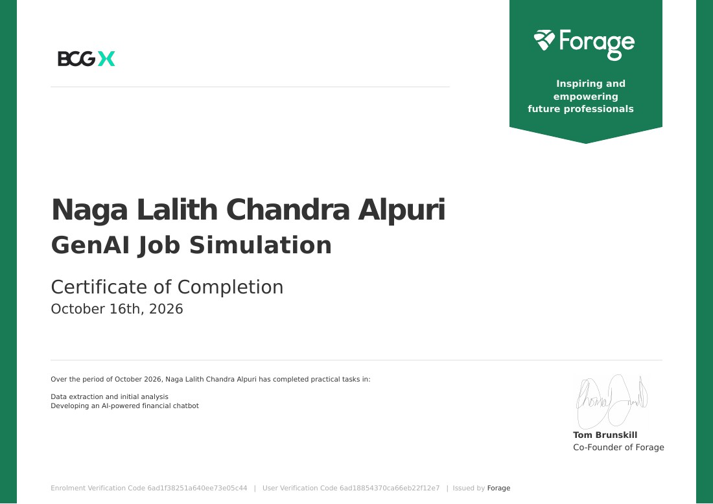
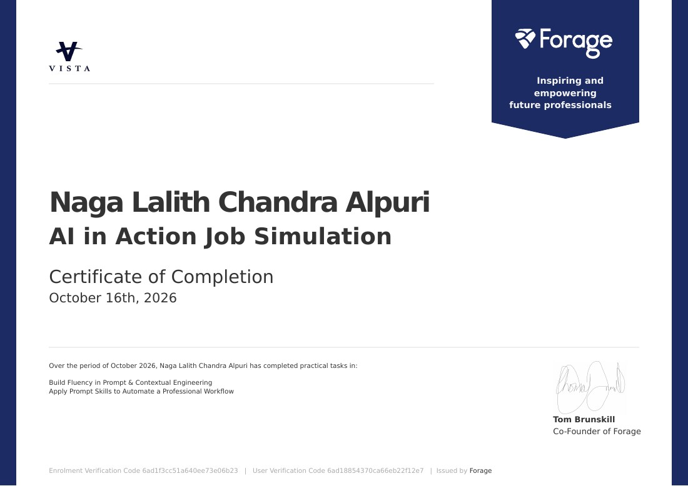
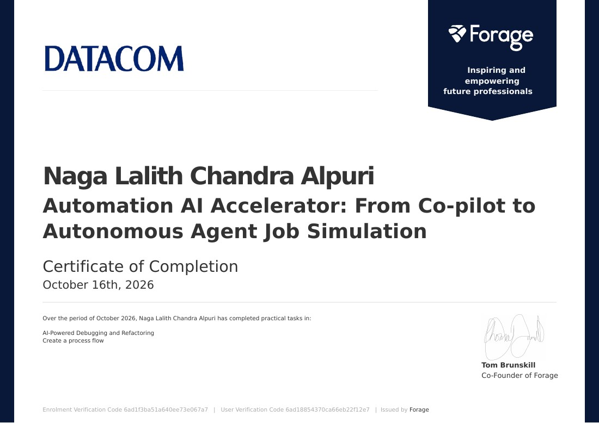
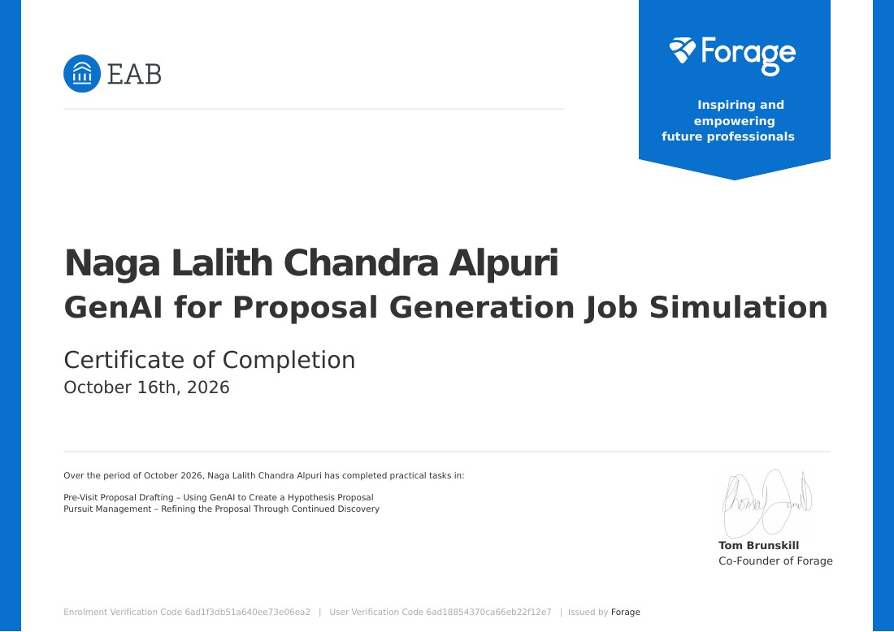
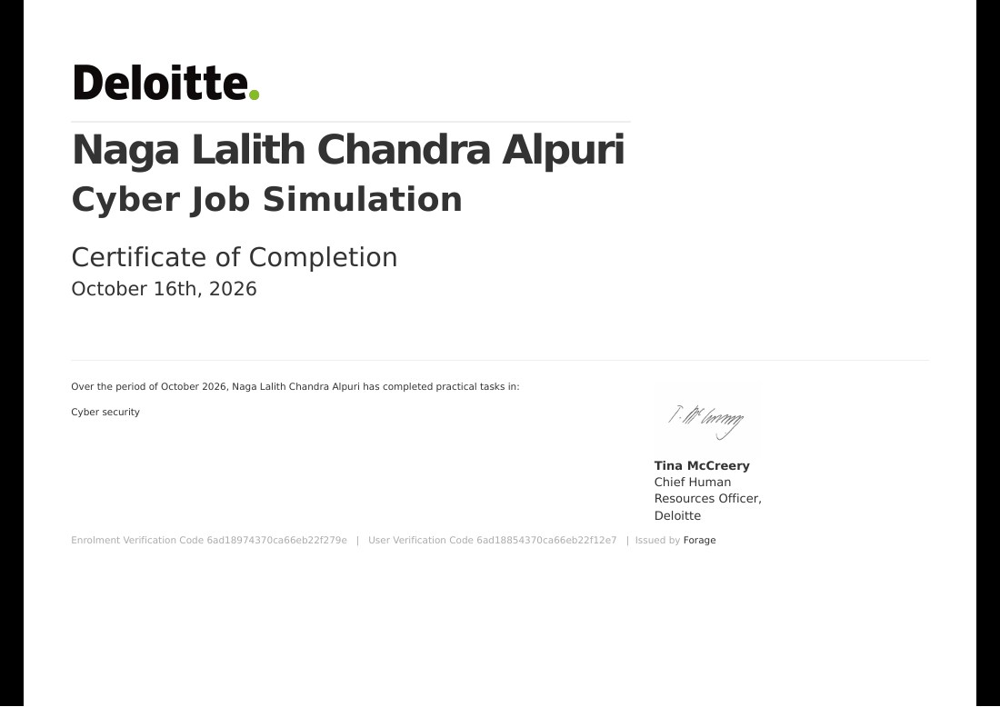

Oracle Fusion AI Agent Studio Certified Foundations Associate - Rel 1
Oracle · Certification
Exam 1Z0-1145-1
Issued October 16, 2026
THE FULL RECORD / 2026
AI INFRASTRUCTURE ENGINEER · MCP SERVERS · LOCAL AGENT MEMORY
AI infrastructure engineer and applied AI strategist building local-first systems for coding agents and decision support. I work across Python, Java, MCP servers, SQLite memory, hybrid retrieval, multi-agent simulation, market intelligence, predictive analysis, and full-stack delivery. My public work includes EpisodAI, Episoda Core MCP, ALPURIS OS, and a personal Sentinel / UWOF local AI lab. Credentials include Oracle certifications in cloud infrastructure and Fusion AI Agent Studio, Claude Academy course badges, and industry job simulation certificates through Forage.
MCP servers, AI agents, multi-agent orchestration, local LLM workflows, RAG, hybrid retrieval, knowledge graphs, context engineering
Python, Java, JavaScript/ES6+, SQL, Bash, R
Spring Boot, Spring, JPA/Hibernate, REST APIs, Node.js, SQLite/FTS5, MySQL, MongoDB
React, Next.js, HTML, CSS, WebGL visualization
Docker, Kubernetes, Git/GitHub, GitHub Actions, Postman, Selenium automation, manual QA, HLD/LLD, DSA
MLX, Ollama, OpenInterpreter, LoRA fine-tuning, Apple Silicon model tiers, Obsidian workflows

Oracle · Certification
Exam 1Z0-1145-1
Issued October 16, 2026

Oracle · Certification
Exam 1Z0-1085-26
Issued October 16, 2026 · Valid until October 16, 2028

Claude Academy · Course completion badge
Issued October 16, 2026

Claude Academy · Course completion badge
Issued October 16, 2026
Five industry job simulations completed through Forage, with practical tasks in generative AI, automation, and cyber security.

BCG X · Forage · Certificate of completion
Issued October 16, 2026
Data extraction and initial analysis; developing an AI-powered financial chatbot.

Vista Equity Partners · Forage · Certificate of completion
Issued October 16, 2026
Prompt and contextual engineering; automating a professional workflow.

Datacom · Forage · Certificate of completion
Issued October 16, 2026
AI-powered debugging and refactoring; process-flow design.

EAB · Forage · Certificate of completion
Issued October 16, 2026
GenAI hypothesis-proposal drafting; proposal refinement through continued discovery.

Deloitte · Forage · Certificate of completion
Issued October 16, 2026
Practical tasks in cyber security.
Completed Java Full Stack Development training at KodNest; current location: Nashik, Maharashtra, India.
Java, Python, Spring Boot, JPA/Hibernate, React, SQL, MongoDB, REST APIs, DSA, manual QA, and Selenium automation.
Coursework included Python, Core Java, C/C++, R, DBMS, and enterprise application foundations.
GitHub: https://github.com/lalithbuilds · Project home: https://lalithbuilds.github.io/ · LinkedIn: https://www.linkedin.com/in/lalith-alpuri/
The downloadable files preserve the complete formatted résumé.